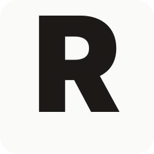
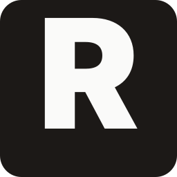
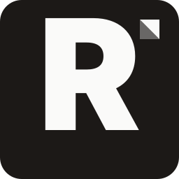
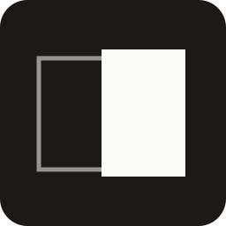

Recto · Brand Identity
Three directions for review. Direction A is the recommendation — pure wordmark plus single-letter monogram, no illustration. This is the dev-tool naming norm (Linear, Notion, Arc, Stripe) and the strongest defense against the rectum-adjacency, because the typography-only mark anchors "recto = typography term" before anyone reads the word.
Heavy geometric sans (Inter Black; final production would use a licensed typeface or custom letterform). Tight tracking. Square containment, 12% radius — matches Windows 11 system icons without looking cartoon. The R itself is the brand mark; no decoration.


A is the recommendation. B and C are included so you can see the trade. B adds a small folded-page-corner mark to telegraph "document"; C uses an open-book / page-spread glyph (the most literal anchor, but reads more like 2014 consumer-app illustration).
A — Wordmark
Type-driven. Strongest modern-dev-tool signal. Recommended.

B — Page mark
Same R + small folded-corner glyph. Adds a typography anchor; slightly more "startup logo, 2020."

C — Open spread
Most literal — two pages, right (recto) highlighted. Strongest anchor against rectum association; reads more illustrative.
Monochrome warm grays plus a single deep ink-blue accent. Restrained, document-centric, lets the rendered Markdown be the subject.
Palette
Type stack
Full spec in docs/design/DESIGN.md.